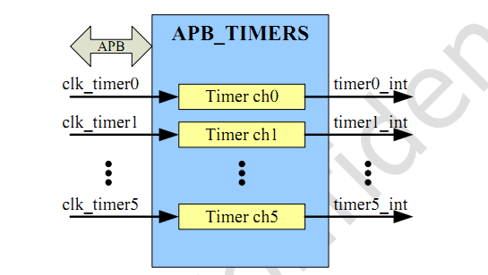
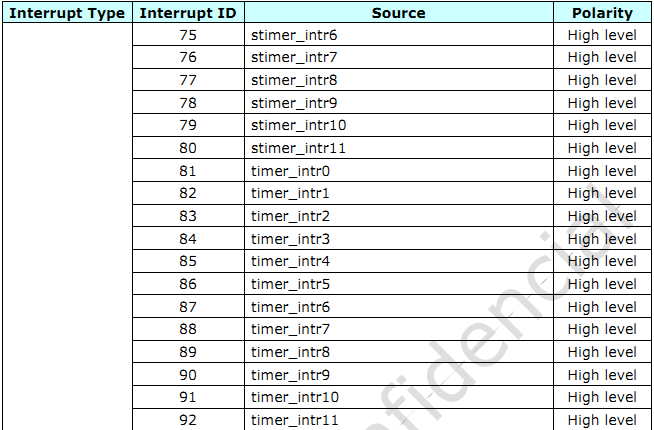
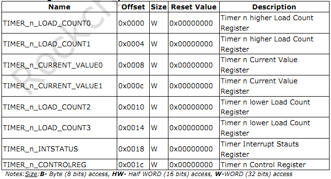

TIMER 使用¶
前言¶
RK3399有12 个Timers (timer0-timer11)，有12 个Secure Timers(stimer0~stimer11) 和 2 个Timers(pmutimer0~pmutimer1)， 我们主要 用到的是Timers(timer0-timer11)时钟频率为24MHZ ，工作模式有 free- running 和 user-defined count 模式
框架图¶
time1
工作模式¶
user-defined count：Timer 先载入初始值到 TIMERn_LOAD_COUNT3 和 TIMER_LOADn_COUNT2寄存器， 当时间累加的值在寄存器TIMERn_LOAD_COUNT1和 TIMERn_LOAD_COUNT0时，将不会自动载入到计数寄存器。 用户需要重新关闭计 数器和然后重新设置计数器相关才能继续工作。
free-running：Timer先载入初始值到TIMER_LOAD_COUNT3 和 TIMER_LOAD_COUNT2寄存器， 当时间累加的值在寄存器TIMERn_LOAD_COUNT1和 TIMERn_LOAD_COUNT0时，Timer将一直自动加载计数寄存器。
软件配置¶
1.在 dts 文件中定义 Timer 的相关配置 kernel/arch/arm64/boot/dts/rockchip/rk3399.dtsi
rktimer: rktimer@ff850000 {
compatible = "rockchip,rk3399-timer";
reg = <0x0 0xff850000 0x0 0x1000>;
interrupts = <GIC_SPI 81 IRQ_TYPE_LEVEL_HIGH 0>;
clocks = <&cru PCLK_TIMER0>, <&cru SCLK_TIMER00>;
clock-names = "pclk", "timer";
};
其中定义的Timer0 的寄存器和中断号和时钟等
其他Timer 对应的中断号可看如下图片
timer2
2.对应的驱动文件Kernel/drivers/clocksource/rockchip_timer.c
对应寄存器和使用¶
1.寄存器如下图片
timer3
2.使用方式 查看对应寄存器
root@rk3399_firefly_box:/ # io -4 0xff85001c //查看当前控制寄存器的状态
ff85001c: 00000007
root@rk3399_firefly_box:/ # io -4 0xff850000 //查看寄存器时时的值
ff850000: 0001639f
控制对应寄存器
root@rk3399_firefly_box:/ # io -4 -w 0xff85001c 0x06 //关闭时间计数功能